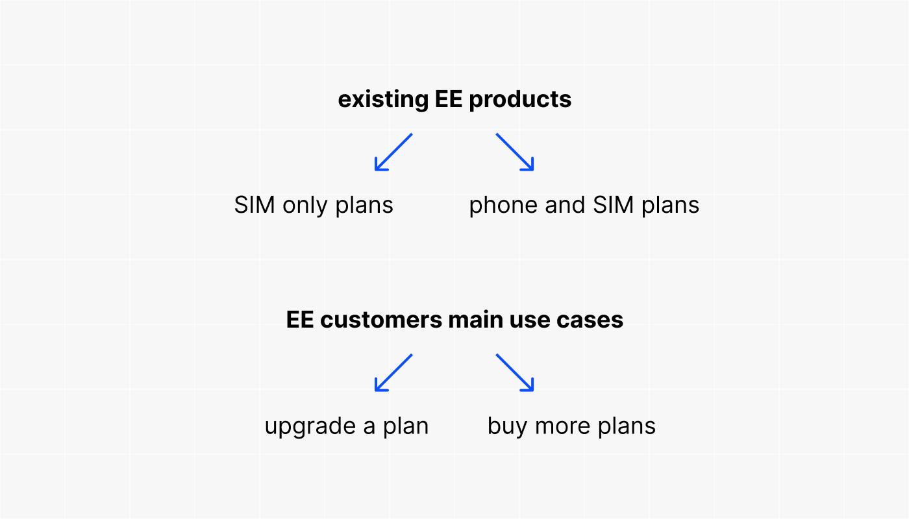
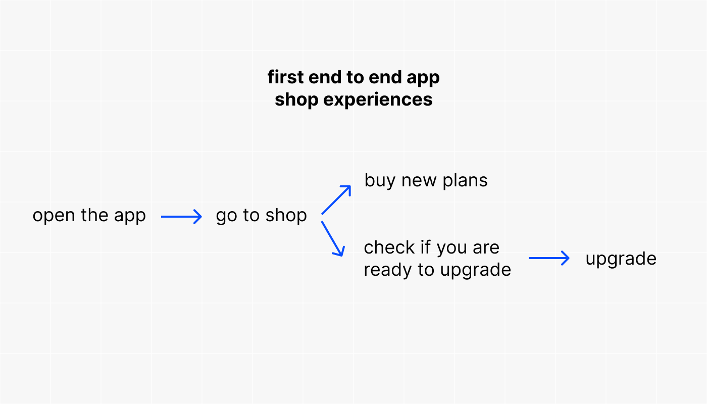

EE app - how it started
EE is one of the leading mobile providers in the UK, serving over 22 million customers.
The access of EE's services extends from their website to the dedicated EE app. As of now, the app plays a significant role, accounting for about 40% of total orders and attracting roughly 2,300,000 visits each week.
Upon my arrival in the UK in 2019, the EE app functioned merely as a static interface displaying data usage. For further engagements, users were redirected to the EE website, having to use the mobile browsers instead of the app.
I joined EE in 2022. This coincided with the beginning of the EE app's transformation towards offering native user experiences.
I was part of the pioneering team tasked with building the shopping experience within the app. This was the first app-native experience, followed by all other app areas. Our team was the first to release using a completely new technology, Flutter, which allowed us to have one development team instead of separate iOS and Android platform-based teams.
Throughout this period, I actively participated in the transition from a web-centric interface to a fully integrated, native app experience. It was amazing to see app experience evolving from displaying old embedded web pages within the app to gradually becoming fully native, usable platform.
Strategic Launch of the In-App Shop
Introducing a shop experience within the EE app was a strategic move to empower mobile customers with the flexibility to upgrade or acquire new plans directly through their app. Despite the perceived importance of functionalities like bill checks or roaming activation, the shop experience quickly emerged as the top business priority. It stood out as the initial profit-generating component within the app, justifying a focused development effort.
The shift in consumer behaviour towards mobile-first interactions urged the company to recalibrate its strategy, aiming to enhance presence on platforms predominantly utilised by customers. Recent analytics underscored this trend, revealing that mobile devices account for approximately 60% of the web traffic, underscoring the necessity to adapt to the evolving digital landscape.
It's worth mentioning a few pivotal business goals: merging BT and EE (with BT Broadband becoming one of EE's products, positioning EE as the customer-facing brand while BT transitions to a B2B model). This merge aimed to expand the service portfolio and capture the "household" market by not just offering broadband and mobile connections but also a variety of emerging products.
In the long-term vision, the shop was envisioned to evolve into a marketplace. The tactical approach involved integrating existing services into the shop to give customers time to familiarize themselves with and use the shop, and for the company to learn from building its first app experiences, especially with new technologies (like adopting Flutter for the front end and transitioning the backend from old systems to new e-commerce solutions).
Given the growing access to EE platforms through mobile devices, introducing revenue-generating products into the EE app was key.
This strategy laid the groundwork for achieving EE's core business objectives as we embarked on developing the EE App Shop.
Setting the foundations of the EE Shop Based on the context provided above, my team's responsibility was to seamlessly integrate the main EE mobile products and use cases into the EE app shop.
The first flows introduced into the app shop enabled existing customers to explore additional plans or look for devices and SIM plans suitable for upgrading their current plans. Upon entering the shop, customers were presented with a curated selection in both a device gallery and a SIM-only gallery. This streamlined the process, enabling them to add products to their basket and effortlessly proceed to checkout. Moreover, a significant feature was the app's capability to proactively notify customers about their eligibility for upgrades. This ensured that customers were informed at the optimal time to explore and choose a new plan as their current contract drew to a close, further enriching the customer experience within the EE app.
First release> The first four end-to-end app shop journeys for existing customers we built were: 1. Buy an additional SIM plan 2. Buy a new phone and SIM plan 3. Upgrade your SIM plan 4. Upgrade your phone and SIM plan Firs app release was on 2021 July. ???
No requirements and tones of web squads working individually on different initiatives
One of the few challenges was working without clear business rules and briefs, stemming from the assumption that everything had been defined long ago when these journeys were first implemented on the web. The issue here was that, at the time those web journeys were built, there was a different team structure. You might have had one web squad responsible for only some parts of what you needed, while another squad managed other segments.
Furthermore, besides the core steps in a journey, there are numerous features that intersect and must be considered to achieve a seamless experience between the web and the app.
So, in addition to merely constructing the pages, we had to promptly collaborate with initiative-based squads to integrate a set of features into the app, such as:
- Trade-in
- eSIM
- Pre-order experience, and others
As a result, in order to build a seamless experience in the app we had to collaborate and actively build solutions in parallel with multiple web squads while trying to maintain consistency within app and simplify and unify everything as much as possible.
Complexity and continuously growing ownership
After we built the main core journeys, we had to incorporate other products into the equation that are sold with SIM plans, such as watches, tablets, and laptops, considering their unique aspects.
The next step on the roadmap was to add an extra journey for all device plans, transitioning from the subsidy model of selling plans to Flex Pay—a new regulatory requirement. This allows customers to have a more transparent view of a plan's price by separating the device cost from the plan cost.
As a result, we built 14 native app shop end-to-end experiences, which consist of 113 pages in total, based on the same 6 to 10 consistent steps.
Design alignments
While gradually adding those native pages into the app, we were faced with the EE rebranding as a consequence of launching the new EE (EE went through a significant change, becoming BT’s sole customer-facing platform, therefore, a major brand update was underway). It meant that we worked in parallel and at the same pace with the design system team, initially having only a few new brand components to start with and having to constantly update designs. This became possible due to a very systematic approach to scalability: by building end to end journeys in one squad, it was easy to maintain consistency by being able to reuse already built design patterns and only address the differences between each journey. Rather than following the web approach where different squads were asked to work on individual pages or journeys, we actually managed to build much more in a much more consistent manner and faster. This was possible because there was no duplication of effort at all, rather a lot of consolidation and bringing things under the same structure.
The ambition to follow the app-first approach
We faced specific app challenges, such as incorporating dark mode designs and considering the activation of landscape mode later on. This required continuous discussion loops with the design system squad and accessibility teams to ensure consistent solutions were implemented.
The 2-Week Release Cycle
In a significant shift towards agility and efficiency, we pioneered the adoption of a 2-week release cycle within the company. This model not only signified our ability to adapt and evolve rapidly but also set a new standard for operational excellence within our teams. By embracing this accelerated pace, we were able to introduce improvements, respond to user feedback, and iterate on features with unprecedented speed, marking a new era of development dynamics at EE.